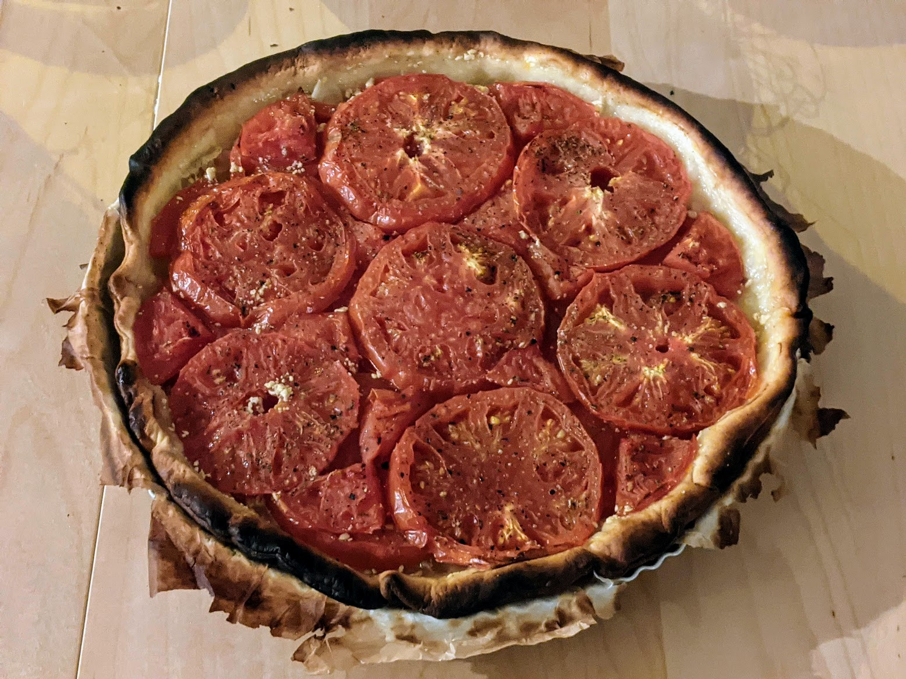

Tarte à la tomate et à la moutarde

Pour une tarte :
- Une pâte brisée
- 4 tomates bien mûres (genre cœur de bŒuf)
- Un gros oignon
- Pas mal de moutarde de Dijon
- Des herbes de Provence
- Sel, poivre
- Étaler la pâte, la percer de partout avec une fourchette, et la faire précuire à 230°C pendant cinq minutes.
- Pendant ce temps, couper les tomates en rondelles (maximum un demi-centimètre d'épaisseur), enlever les pépins, et les disposer entre deux feuilles de papier absorbant pour enlever un peu d'eau.
- Couper l'oignon en rondelles.
- Badigeonner le fond de la tarte de moutarde, assez généreusement. Il faut que le fond de pâte ne se voie plus.
- Disposer l'oignon au fond de la pâte, puis les tomates. Il faut faire plusieurs couches.
- Saler, poivrer, saupoudrer d'herbes de Provence, et enfourner 20 minutes (toujours à 230°C).
- Recouvrir avec du papier d'aluminium, et laisser cuire 20 minutes de plus. Déguster chaud, par exemple avec une salade.